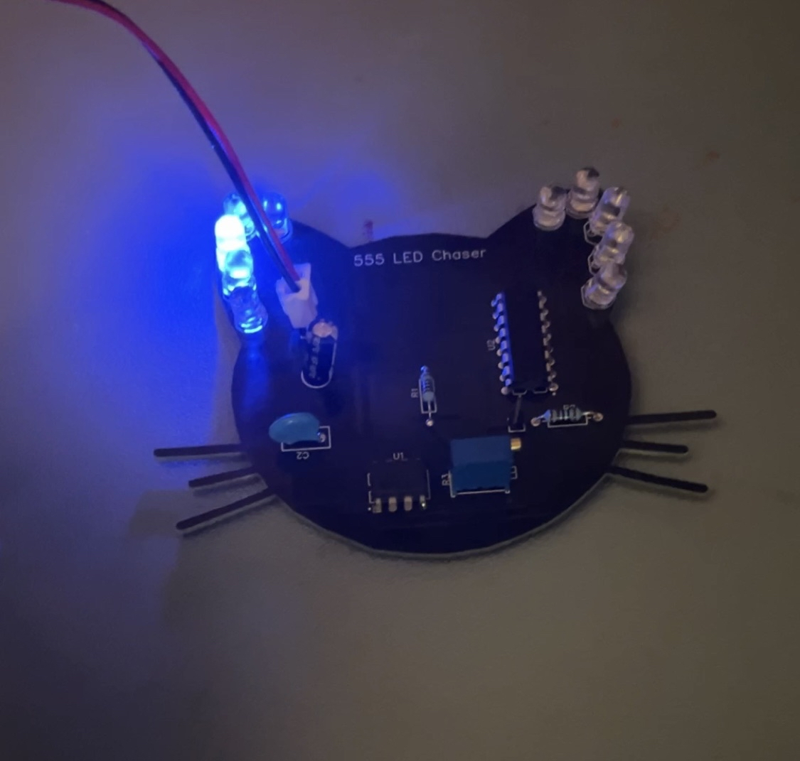
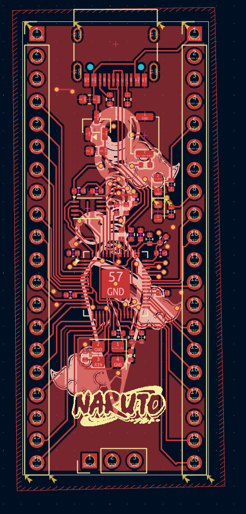

555 LED Chaser
After following the blinky board tutorial on this website I was able to create my first PCB ever. I made the board look like a cat because they are my favorite animal. This project was also my first time soldering, which was an interesting experience. I'm surprised that it actually worked without that much setbacks.
RP2040 Devboard
Following the tutorial by KaiPereira I will begin to understand how to use KiCad and understand the workings of a Devboard.